R setup
library(tidyverse)
library(httr)
library(dunnr)
extrafont::loadfonts(device = "win", quiet = TRUE)
theme_set(theme_td())
set_geom_fonts()
set_palette()Taylor Dunn ![]()
library(tidyverse)
library(httr)
library(dunnr)
extrafont::loadfonts(device = "win", quiet = TRUE)
theme_set(theme_td())
set_geom_fonts()
set_palette()This is the last in a series of posts about predicting bike ridership in Halifax. Previously I:
Here, I will walk through my steps of putting the model into “production” on Google Cloud Platform (GCP):
plumber package (try it out here), andThe source code for everything, including the Dockerfiles, can be found on GitHub here.
Before anything, I had to create and set up a new project on GCP that I called hfx-bike-ridership. In addition to the very detailed GCP documentation, there are lots of great resources out there to walk through all the steps, like this one. In brief: after creating the project, I had to enable billing on the project, activate various APIs, create credentials (OAuth client and service account), and install the Cloud SDK.
I next set up the ETL (extract, transform, load) pipeline to automatically extract the raw data from their sources, perform some transformations, and load it into a database.
In BigQuery, I created the bike_counts and weather data sets:
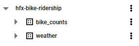
I then wrote a script etl.R that retrieves and processes bike counter data from the Halifax open data platform, and weather data from the government of Canada. Most of the code there is copied from my previous post, except for the lines at the end to upload the data to BigQuery tables:
bq_auth("oauth-client.json")
project <- "hfx-bike-ridership"
daily_counts_table <- bq_table(project, "bike_counts", "daily_counts")
weather_table <- bq_table(project, "weather", "daily_report")
bq_table_upload(daily_counts_table,
value = bike_counts_daily, fields = bike_counts_daily,
create_disposition = "CREATE_IF_NEEDED",
write_disposition = "WRITE_TRUNCATE")
bq_table_upload(weather_table,
value = climate_report_daily, fields = climate_report_daily,
create_disposition = "CREATE_IF_NEEDED",
write_disposition = "WRITE_TRUNCATE")This uses the bigrquery package to authenticate (bq_auth()) using my OAuth credentials and upload (bq_table_upload()) the data (creates if missing, overwrites if existing) to the tables daily_counts and daily_report. Here is what BigQuery looked like after running this script:
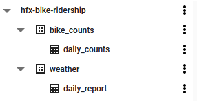
And the daily_counts table:

Putting these data into BigQuery, as opposed to a Cloud Storage bucket for example, is convenient for quick queries when I don’t want to load the data into R, like this one to find days with zero bikes counted:

I could have simply wrote the data to CSV files and uploaded them via the GCP console, but that would defeat the purpose of next step: automation. To deploy my etl.R script, I wrote a fairly simple Dockerfile:
FROM rocker/tidyverse:latest
RUN R -e "install.packages(c('bigrquery', 'httr'), repos = 'http://cran.us.r-project.org')"
ADD oauth-client.json /home/rstudio
ADD etl/etl.R /home/rstudio
CMD Rscript /home/rstudio/etl.RExplaining how Docker works is a bit out of scope for this post1 but from top to bottom:
FROM rocker/tidyverse:latest
tidyverse Docker image provided by RStudio, which you can read more about here: https://hub.docker.com/r/rocker/tidyverse.tidyverse.RUN R -e "install.packages(c('bigrquery', 'httr'), repos = 'http://cran.us.r-project.org')"
tidyverse.httr for interacting with APIs, and bigrquery for BigQuery.ADD oauth-client.json /home/rstudio and ADD etl/etl.R /home/rstudio
CMD Rscript /home/rstudio/etl.R
I then built the image, tagged it, and pushed it to the Container Registry with these commands:
docker build -t hfx-bike-ridership-etl .docker tag hfx-bike-ridership-etl gcr.io/hfx-bike-ridership/hfx-bike-ridership-etldocker push gcr.io/hfx-bike-ridership/hfx-bike-ridership-etl:latestNow that it exists on GCP, I want to schedule this container to run every week through Cloud Build and Cloud Scheduler. I used the googleCloudRunner package and followed these instructions:
library(googleCloudRunner)
cr_setup() # Define project ID and authenticate with credentials
build <- cr_build_make("etl/hfx-bike-ridership-etl.yaml")
cr_schedule(
# Schedule for every Sunday at 12am
schedule = "0 0 * * SUN",
name = "etl",
httpTarget = cr_schedule_http(build),
region = "northamerica-northeast1"
)Here is how the job showed up in Cloud Scheduler:
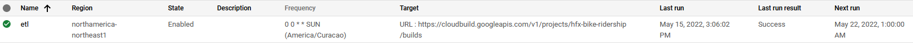
And that’s the ETL taken care of. I left it for a day, and checked the data on Sunday morning to confirm that the data had been updated as expected.
With the data in place, I then created a Cloud Storage bucket to store models, and wrote the tune.R script.
# Setup -------------------------------------------------------------------
library(tidyverse)
library(tidymodels)
library(bigrquery)
library(googleCloudStorageR)
library(tictoc)
source("model/preprocess.R")
n_cores <- parallel::detectCores(logical = FALSE)
library(doParallel)
cl <- makePSOCKcluster(n_cores - 1)
registerDoParallel(cl)
# This extra step makes sure the parallel workers have access to the
# `tidyr::replace_na()` function during pre-processing
parallel::clusterExport(cl, c("replace_na"))
# Read data ---------------------------------------------------
bq_auth(path = "oauth-client.json")
# Define the project, dataset and a new table for this project
project <- "hfx-bike-ridership"
daily_counts_table <- bq_table(project, "bike_counts", "daily_counts")
bike_data <- bq_table_download(daily_counts_table)
bike_data_updated <- bq_table_meta(daily_counts_table)$lastModifiedTime %>%
as.numeric() %>%
# `lastModifiedTime` is in milliseconds from 1970-01-01
{as.POSIXct(. / 1000, origin = "1970-01-01")}
weather_table <- bq_table(project, "weather", "daily_report")
weather_data <- bq_table_download(weather_table)
weather_data_updated <- bq_table_meta(weather_table)$lastModifiedTime %>%
as.numeric() %>%
{as.POSIXct(. / 1000, origin = "1970-01-01")}
# Pre-process -------------------------------------------------------------
bike_data <- preprocess(bike_data, weather_data)
# Splitting and resampling ------------------------------------------------
# For the initial time split, data is ordered by date so that the training
# data consists of the earliest dates across all sites
bike_data <- bike_data %>% arrange(count_date, site_name)
bike_split <- initial_time_split(bike_data, prop = 0.7)
bike_train <- training(bike_split)
bike_test <- testing(bike_split)
# ... but once I'm done splitting the data, I want to order by site followed by
# date for two reasons:
# (1) `step_impute_roll()` looks for rows in a window (ordered)
# (2) the `mase` metric compares predictions to the naive prediction, which
# uses the previous value
bike_train <- bike_train %>% arrange(count_date, site_name)
bike_test <- bike_test %>% arrange(count_date, site_name)
bike_resamples <-
sliding_period(bike_train, index = count_date,
period = "month", lookback = 13, assess_stop = 1)
# For model versioning, record the splitting and resampling strategy
splits_resamples <- tibble(
n_data = nrow(bike_data), n_train = nrow(bike_train), n_test = nrow(bike_test),
min_date_train = min(bike_train$count_date),
max_date_train = max(bike_train$count_date),
min_date_test = min(bike_test$count_date),
max_date_test = max(bike_test$count_date),
prop = 0.7, resamples = "sliding_period",
resample_params = "lookback = 13, assess_stop = 1"
)
# Features ------------------------------------------------------------------
# Get Canadian holidays
canada_holidays <-
timeDate::listHolidays(
pattern = "^CA|^Christmas|^NewYears|Easter[Sun|Mon]|^GoodFriday|^CaRem"
)
bike_recipe <-
recipe(n_bikes ~ count_date + site_name + n_bikes_lag_14 +
mean_temperature + total_precipitation + speed_max_gust +
snow_on_ground,
data = bike_train) %>%
update_role(count_date, new_role = "date_variable") %>%
step_date(count_date, features = c("dow", "doy", "year"),
label = TRUE, ordinal = FALSE) %>%
step_holiday(count_date, holidays = canada_holidays) %>%
step_novel(all_nominal_predictors()) %>%
step_dummy(all_nominal_predictors()) %>%
step_impute_mean(speed_max_gust) %>%
step_mutate_at(c(total_precipitation, snow_on_ground),
fn = ~ replace_na(., 0)) %>%
# Use a rolling window to impute temperature
step_impute_roll(mean_temperature, statistic = mean, window = 31) %>%
step_zv(all_predictors())
# Model spec and workflow -----------------------------------------------------
xgb_spec <- boost_tree(
mtry = tune(), trees = tune(), min_n = tune(),
tree_depth = tune(), learn_rate = tune()
) %>%
set_engine("xgboost") %>%
set_mode("regression")
bike_xgb_workflow <- workflow() %>%
add_recipe(bike_recipe) %>%
add_model(xgb_spec)
bike_train_baked <- prep(bike_recipe) %>% bake(bike_train)
xgb_grid <- grid_latin_hypercube(
finalize(mtry(), select(bike_train_baked, -n_bikes)),
trees(), min_n(), tree_depth(), learn_rate(),
size = 100
)
# Tune --------------------------------------------------------------------
bike_metrics <- metric_set(rmse, mae, rsq, mase)
set.seed(944)
tic()
xgb_tune <- tune_grid(
bike_xgb_workflow, resamples = bike_resamples,
grid = xgb_grid, metrics = bike_metrics
)
toc()
# Choose the hyperparameters by MASE
xgb_params <- select_best(xgb_tune, metric = "mase")
# Also get all the metrics on the training for the chosen parameters
train_metrics <- xgb_params %>%
left_join(
collect_metrics(xgb_tune) %>%
select(.metric, mean, n, std_err, .config),
by = ".config"
)
# Finalize and fit to the full training set
bike_xgb_workflow_final <- finalize_workflow(bike_xgb_workflow, xgb_params)
bike_xgb_fit <- bike_xgb_workflow_final %>% fit(bike_train)
# Predict on the test set and get metrics
test_metrics <- bike_xgb_fit %>%
augment(bike_test) %>%
bike_metrics(truth = n_bikes, estimate = .pred)
# Compile the model and info into a list
model_tuned <- list(
timestamp = Sys.time(),
bike_data_updated = bike_data_updated,
weather_data_updated = weather_data_updated,
splits_resamples = splits_resamples,
xgb_params = xgb_params,
train_metrics = train_metrics,
test_metrics = test_metrics,
bike_xgb_fit = bike_xgb_fit
)
# Save model and model info -----------------------------------------------
# Model object
write_rds(model_tuned, "model/tune/xgb-model-tuned.rds")
gcs_upload_set_limit(20000000L) # 20 Mb
metadata <- gcs_upload("model/tune/xgb-model-tuned.rds",
name = "tune/xgb-model-tuned.rds",
bucket = "hfx-bike-ridership-model")
timestamp <- as.POSIXct(metadata$updated,
tryFormats = "%Y-%m-%dT%H:%M:%OS", tz = "GMT")
# XGB hyperparameters
xgb_params <- xgb_params %>%
mutate(timestamp = model_tuned$timestamp) %>%
select(-.config)
write_csv(xgb_params, "model/tune/xgb-params.csv",
append = TRUE, col_names = FALSE)
params_table <- bq_table(project, "model_info", "params")
bq_table_upload(params_table,
value = xgb_params, fields = xgb_params,
create_disposition = "CREATE_IF_NEEDED",
write_disposition = "WRITE_APPEND")
# Model metrics
xgb_metrics <- bind_rows(
train = train_metrics %>%
select(metric = .metric, value = mean, n, std_err),
test = test_metrics %>%
select(metric = .metric, value = .estimate),
.id = "data_set"
) %>%
mutate(timestamp = model_tuned$timestamp)
write_csv(xgb_metrics, "model/tune/xgb-metrics.csv",
append = TRUE, col_names = FALSE)
metrics_table <- bq_table(project, "model_info", "metrics")
bq_table_upload(metrics_table,
value = xgb_metrics, fields = xgb_metrics,
create_disposition = "CREATE_IF_NEEDED",
write_disposition = "WRITE_APPEND")
# Splitting and resampling strategy
splits_resamples <- splits_resamples %>%
mutate(timestamp = model_tuned$timestamp)
write_csv(splits_resamples, "model/tune/splits-resamples.csv",
append = TRUE, col_names = FALSE)
splits_resamples_table <- bq_table(project, "model_info", "splits_resamples")
bq_table_upload(splits_resamples_table,
value = splits_resamples, fields = splits_resamples,
create_disposition = "CREATE_IF_NEEDED",
write_disposition = "WRITE_APPEND")This actual model code and choices are mostly unchanged from my last post, but in brief it: retrieves the latest data from BigQuery, splits the data into training and testing, creates resamples, engineers features, tunes the XGBoost model, finds the best hyperparameters by MASE, and saves the model (as an R object) to the bucket. I also decided to keep track of metrics with a BigQuery table:
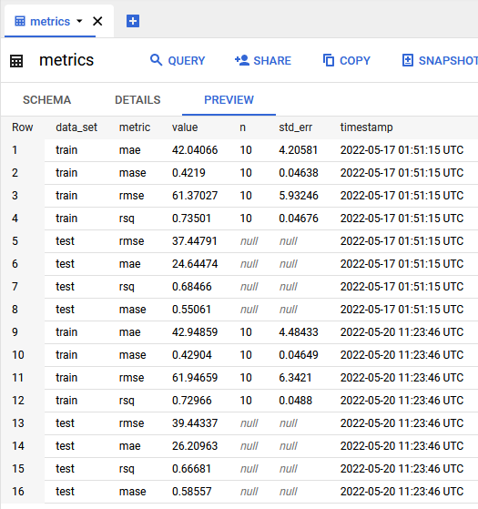
I decided to keep this part of the pipeline manual. Tuning the XGBoost model takes a while on my machine, even with parallel processing, and I’ve heard enough horror stories of surprise charges from cloud services that I don’t feel like risking it. I will periodically check in on my model predictions, and only plan on re-tuning if performance degrades appreciably.
What I will automate, however, is model training. Every time the data is updated (i.e. Sundays at midnight), I want to train the tuned model on the full data set. The idea is pretty simple: get the data from BigQuery, the tuned model from the bucket, fit to the data and save that fit to the same bucket. The tricky bit is that I want this process to trigger only when the data is updated. It turns out that BigQuery currently doesn’t have native functionality to trigger Cloud Run, so I had to use a workaround.
First, I wrote the fit.R function to work as a plumber API (these instructions were helpful):
library(dplyr)
library(readr)
library(tidymodels)
library(bigrquery)
library(googleCloudStorageR)
library(googleCloudRunner)
library(plumber)
source("preprocess.R")
bq_auth(path = "oauth-client.json")
gcs_auth("oauth-client.json")
gcs_upload_set_limit(20000000L) # 20 Mb
# This function will retrieve the latest data from BigQuery, the trained
# model from GCS, and fit an XGBoost model, which is saved to GCS
pub <- function(message) {
# Define the project, dataset and a new table for this project
project <- "hfx-bike-ridership"
daily_counts_table <- bq_table(project, "bike_counts", "daily_counts")
bike_data <- bq_table_download(daily_counts_table)
bike_data_updated <- bq_table_meta(daily_counts_table)$lastModifiedTime %>%
as.numeric() %>%
{as.POSIXct(. / 1000, origin = "1970-01-01")}
weather_table <- bq_table(project, "weather", "daily_report")
weather_data <- bq_table_download(weather_table)
weather_data_updated <- bq_table_meta(weather_table)$lastModifiedTime %>%
as.numeric() %>%
{as.POSIXct(. / 1000, origin = "1970-01-01")}
bike_data <- preprocess(bike_data, weather_data)
xgb_tuned <- gcs_get_object("tune/xgb-model-tuned.rds",
bucket = "hfx-bike-ridership-model",
parseFunction = gcs_parse_rds)
message("Writing updating xgb-fit")
xgb_fit <- list(
tune_timestamp = xgb_tuned$timestamp,
timestamp = Sys.time(),
bike_data_updated = bike_data_updated,
weather_data_updated = weather_data_updated,
bike_xgb_fit = fit(xgb_tuned$bike_xgb_fit, bike_data)
)
f <- function(input, output) write_rds(input, output)
metadata <- gcs_upload(xgb_fit, name = "xgb-fit.rds",
bucket = "hfx-bike-ridership-model",
object_function = f)
return(TRUE)
}
#' Receive pub/sub message
#' @post /pubsub
#' @param message a pub/sub message
function(message = NULL) {
message("Received message ", message)
googleCloudRunner::cr_plumber_pubsub(message, pub)
}I wrote a Docker file to containerize the API, built the image, and pushed it to the Container Registry. I then went to Cloud Run, created a new service called hfx-bike-ridership-fit using the just-uploaded Docker image:
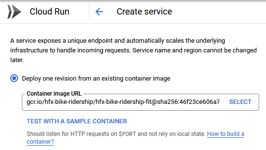
Once up and running, this gave me a URL from which to query the API:
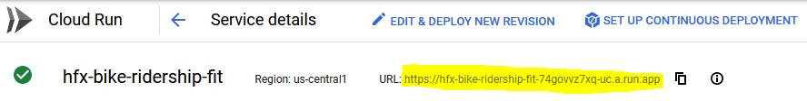
Next, I had to set up an internal messaging system. The steps were:
message("Finished ETL pipeline") at the end of the etl.R script to indicate that the data was updated.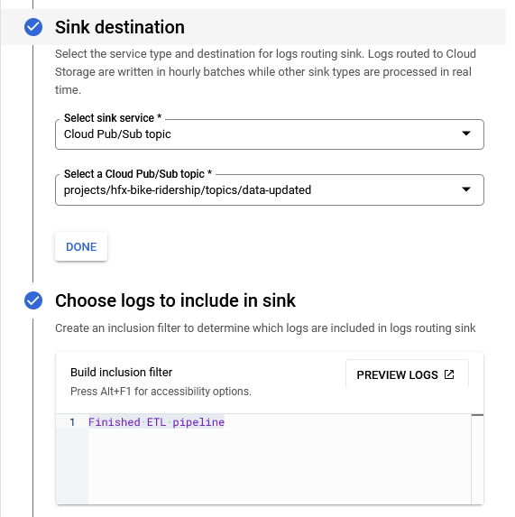
data-updated.
This seems like a complex workaround for a fairly simple task – I might be missing an easier method. Also, it may have made more sense to just have the model re-train on a weekly schedule (just after the ETL pipeline), but I wanted more flexibility for ad hoc updates. Regardless, both the ETL and model training are now fully automated.
To serve predictions, I wrote another plumber API in the api.R script:
#* @apiTitle Predict bike ridership in Halifax, NS
#* @apiDescription This API serves predictions for the daily number of bicyclists passing particular sites around Halifax, Nova Scotia. For more information, check out the [source code](https://github.com/taylordunn/hfx-bike-ridership), my [post about the data](https://tdunn.ca/posts/2022-04-27-predicting-bike-ridership-getting-the-data/), and [my post about developing the model](https://tdunn.ca/posts/2022-04-29-predicting-bike-ridership-developing-a-model/).
#* @apiContact list(name = "Taylor Dunn", url = "http://www.tdunn.ca", email = "t.dunn19@gmail.com")
#* @apiVersion 1.0
library(plumber)
library(dplyr)
library(tidymodels)
library(bigrquery)
library(googleCloudStorageR)
bq_auth(path = "oauth-client.json",
email = "hfx-bike-ridership@hfx-bike-ridership.iam.gserviceaccount.com")
gcs_auth("oauth-client.json")
project <- "hfx-bike-ridership"
message("Reading data")
daily_counts_table <- bq_table(project, "bike_counts", "daily_counts")
bike_data <- bq_table_download(daily_counts_table)
message("Loading model")
xgb_fit <- gcs_get_object("xgb-fit.rds", bucket = "hfx-bike-ridership-model",
parseFunction = gcs_parse_rds)
site_names <- c("Dartmouth Harbourfront Greenway", "Hollis St",
"South Park St", "Vernon St", "Windsor St")
#* @param count_date:str The date in YYYY-MM-DD format.
#* @param site_name:[str] The location of the bike counter. One of "Dartmouth Harbourfront Greenway", "Hollis St", "South Park St", "Vernon St", "Windsor St".
#* @param n_bikes_lag_14:[int] The number of bikes measured at the given `site_name` 14 days ago. If not provided, will attempt to impute with the actual value 14 days before `count_date`.
#* @param mean_temperature:numeric The daily mean temperature. If not provided, will impute with the rolling mean.
#* @param total_precipitation:numeric The daily amount of precipitation in mm. If not provided, will impute with zero.
#* @param snow_on_ground:numeric The daily amount of snow on the ground in cm. If not provided, will impute with zero.
#* @param speed_max_gust:numeric The daily maximum wind speed in km/h. If not provided, will impute with the mean in the training set.
#* @get /n_bikes
function(count_date, site_name = NA_character_, n_bikes_lag_14 = NA_integer_,
mean_temperature = NA_real_, total_precipitation = NA_real_,
snow_on_ground = NA_real_, speed_max_gust = NA_real_) {
# If not provided, use all `site_name`s
if (any(is.na(site_name))) {
site_name <- site_names
} else {
site_name <- match.arg(
site_name, choices = site_names, several.ok = TRUE
)
}
count_date <- as.Date(count_date)
# Get the 14-day lagged bike counts for each site
if (!is.na(n_bikes_lag_14) & length(site_name) != length(n_bikes_lag_14)) {
return(list(
status = 400,
message = "Must provide a value of `n_bikes_lag_14` for every given `site_name`."
))
} else {
d <- tibble(site_name = .env$site_name, count_date = .env$count_date,
count_date_lag_14 = count_date - 14,
n_bikes_lag_14 = .env$n_bikes_lag_14)
if (sum(is.na(d$n_bikes_lag_14)) > 0) {
message("Imputing `n_bikes_lag_14`")
d <- d %>%
left_join(
bike_data %>%
select(site_name, count_date_lag_14 = count_date,
n_bikes_lag_14_impute = n_bikes),
by = c("site_name", "count_date_lag_14")
) %>%
mutate(
n_bikes_lag_14 = ifelse(is.na(n_bikes_lag_14),
n_bikes_lag_14_impute, n_bikes_lag_14)
) %>%
select(-n_bikes_lag_14_impute)
if (sum(is.na(d$n_bikes_lag_14)) > 0) {
return(list(
status = 400,
message = paste0(
"Could not find `n_bikes_lag_14` values on date ", count_date,
" for these sites ",
filter(d, is.na(n_bikes_lag_14)) %>% pull(site_name) %>% paste(collapse = ", "),
". Please provide your own `n_bikes_lag_14`, or choose a different `count_date`."
)
))
}
}
}
# Add weather variables
d <- d %>%
mutate(
n_bikes_lag_14 = as.numeric(n_bikes_lag_14),
mean_temperature = as.numeric(mean_temperature),
total_precipitation = as.numeric(total_precipitation),
snow_on_ground = as.numeric(snow_on_ground),
speed_max_gust = as.numeric(speed_max_gust)
)
augment(xgb_fit$bike_xgb_fit, d)
}
#* @get /model_info
#* @response 200 Returns model information: timestamps of when the model was last trained (`timestamp`), the model was last tuned (`tune_timestamp`), the bicycle data was last updated (`bike_data_updated`), the weather data was last updated (`weather_data_updated`).
function() {
list(
timestamp = xgb_fit$timestamp,
tune_timestamp = xgb_fit$tune_timestamp,
bike_data_updated = xgb_fit$bike_data_updated,
weather_data_updated = xgb_fit$weather_data_updated
)
}This reads in the model from the Cloud Storage bucket and the latest bike data from BigQuery. As inputs, it requires only a single date (count_date), for which it will return predictions for all 5 sites. One or more specific sites can also be provided (site_name). If the lagged values (n_bikes_lag_14) are not provided, then they will be imputed from the bike data (an error will be returned if the lagged value cannot be imputed, i.e. there is no data 14 days before count_date). The weather inputs mean_temperature, total_precipitation, snow_on_ground, and speed_max_gust are imputed if not provided.
As with fit.R, I put this into a Docker container, pushed to Container Registry, and created a Cloud Run service hfx-bike-ridership-api using that image.

Unlike the previous Cloud Run service which only accepts internal requests, this one is publicly available. For instance, you can get a prediction for n_bikes on Hollis St for May 23rd, 2022 with the following R code:
base_url <- "https://hfx-bike-ridership-api-74govvz7xq-uc.a.run.app/"
query <- "n_bikes?count_date=2022-05-23&site_name=Hollis St"
paste0(base_url, query) %>%
URLencode() %>%
GET() %>%
content(as = "parsed") %>%
purrr::flatten()$site_name
[1] "Hollis St"
$count_date
[1] "2022-05-23"
$count_date_lag_14
[1] "2022-05-09"
$n_bikes_lag_14
[1] 86
$.pred
[1] 31.7664A great feature of plumber is that provides an HTML interface for documenting and interacting with REST APIs. Check out this API here: https://hfx-bike-ridership-api-74govvz7xq-uc.a.run.app/docs/.

I also added a model_info option, which can be queried to see timestamps of when the model was last tuned and trained, and when the data were last updated:
query <- "model_info"
paste0(base_url, query) %>%
URLencode() %>%
GET() %>%
content(as = "parsed") %>%
purrr::flatten()$timestamp
[1] "2022-08-21 04:02:28"
$tune_timestamp
[1] "2022-05-20 15:23:46"
$bike_data_updated
[1] "2022-08-21 04:02:06"
$weather_data_updated
[1] "2022-08-21 04:02:10"Lastly, I wrote a Shiny dashboard to visualize predictions, app.R:
library(shiny)
library(shinydashboard)
library(dplyr)
library(readr)
library(tidyr)
library(ggplot2)
library(patchwork)
library(workflows)
library(bigrquery)
library(googleCloudStorageR)
library(DT)
library(dunnr)
source("funcs.R")
# Plotting
library(showtext)
sysfonts::font_add_google("Roboto Condensed")
showtext_auto()
theme_set(theme_td(base_size = 14))
set_geom_fonts()
set_palette()
# Authentication to GCP
project <- "hfx-bike-ridership"
bq_auth(path = "oauth-client.json")
gcs_auth("oauth-client.json")
bike_counts_table <- bq_table(project, "bike_counts", "daily_counts")
weather_table <- bq_table(project, "weather", "daily_report")
server <- function(input, output, session) {
# Import data and model ---------------------------------------------------
data <- reactiveValues()
min_date <- reactiveVal()
max_date <- reactiveVal()
model <- reactiveVal()
observe({
# Re-reads data every hour
invalidateLater(1000 * 60 * 60)
message("Reading data and model")
bike_data_raw <- bq_table_download(bike_counts_table)
weather_data_raw <- bq_table_download(weather_table)
model(gcs_get_object("xgb-fit.rds",
bucket = "hfx-bike-ridership-model",
parseFunction = gcs_parse_rds))
bike_data <- bike_data_raw %>%
preprocess_bike_data() %>%
# Only include the last 14 days
filter(count_date >= max(count_date) - 13)
min_date(min(bike_data$count_date))
max_date(max(bike_data$count_date))
bike_data_future <- bike_data %>%
transmute(
count_date = count_date + 14, site_name, n_bikes_lag_14 = n_bikes
)
weather_data <- weather_data_raw %>%
preprocess_weather_data() %>%
filter(report_date >= min(bike_data$count_date),
report_date <= max(bike_data$count_date))
weather_data_future <- weather_data %>%
transmute(
report_date = report_date + 14,
# Impute temperature and wind speed with the mean
mean_temperature = round(mean(weather_data$mean_temperature,
na.rm = TRUE), 1),
speed_max_gust = round(mean(weather_data$speed_max_gust,
na.rm = TRUE)),
# Impute precipitation and snow with zero
total_precipitation = 0, snow_on_ground = 0
)
data$bike <- bind_rows(bike_data, bike_data_future)
data$weather <- bind_rows(weather_data, weather_data_future)
})
bike_weather_data <- reactive({
data$bike %>%
left_join(data$weather, by = c("count_date" = "report_date"))
})
# Model info --------------------------------------------------------------
output$model_info_1 <- renderText({
HTML(
paste(
"This Shiny app visualizes predictions of the daily number of bicyclists passing various bike counter sites around Halifax, Nova Scotia, in a four-week window.",
"Check out the <a href='https://github.com/taylordunn/hfx-bike-ridership'>source code here</a>, and <a href='https://tdunn.ca/posts/2022-05-19-predicting-bike-ridership-deploying-the-model/'>this write-up</a> for more information.",
paste0("<br>Data are updated, and the model is re-trained on a schedule: currently every Sunday at midnight AST, and sometimes manually by me. ",
"The current data go up to ",
"<b>", max_date(), "</b>",
" as indicated by the vertical dashed line in the plots."),
"<br>The locations of the sites are overlaid on a map of Halifax below:",
sep = "<br>"
)
)
})
output$model_info_2 <- renderText({
HTML(
paste(
"<br>",
"In addition to site, other features of the model are:",
paste0("<ul>",
"<li>date features: day of week, day of year, year, and Canadian holidays</li>",
"<li>the number of bikes counted 14 days ago</li>",
"<li>weather features: daily mean temperature, total precipitation, maximum gust speed, and snow on the ground",
"</ul>"),
"See more information about the features and how missing data are handled <a href='https://tdunn.ca/posts/2022-04-29-predicting-bike-ridership-developing-a-model/'>in this post</a>.",
"<br>"
)
)
})
# Plotting helpers --------------------------------------------------------
scale_x <- reactive({
scale_x_date(NULL, limits = c(min_date() - 1, max_date() + 14),
breaks = seq.Date(min_date() - 1, max_date() + 14, "7 days"),
date_labels = "%b %d")
})
vline <- reactive({
geom_vline(xintercept = max_date(), lty = 2, size = 1)
})
# Bike predictions --------------------------------------------------------
output$n_bikes_plot <- renderPlot({
workflows:::augment.workflow(model()$bike_xgb_fit,
bike_weather_data()) %>%
ggplot(aes(x = count_date)) +
vline() +
geom_line(aes(y = .pred), color = "black", size = 1) +
geom_point(aes(y = n_bikes, fill = site_name),
color = "black", shape = 21, size = 4) +
facet_wrap(~ site_name, ncol = 1) +
expand_limits(y = 0) +
labs(y = NULL) +
scale_x() +
labs(title = "Number of bikes vs date",
subtitle = "Coloured points show actual values, black lines are predictions") +
theme(legend.position = "none") +
dunnr::add_facet_borders()
})
# Weather data ------------------------------------------------------------
temperature_plot <- reactive({
data$weather %>%
filter(!is.na(mean_temperature)) %>%
mutate(var = "Mean daily temperature (celsius)") %>%
ggplot(aes(x = report_date, y = mean_temperature)) +
vline() +
geom_point(fill = td_colors$nice$strong_red, shape = 21, size = 4) +
facet_wrap(~ var) +
labs(y = NULL,
title = "Weather vs date",
subtitle = "Use the table below to edit values for prediction") +
scale_x() +
theme(axis.text.x = element_blank()) +
dunnr::add_facet_borders()
})
precipitation_plot <- reactive({
data$weather %>%
filter(!is.na(total_precipitation)) %>%
mutate(var = "Total daily precipitation (mm)") %>%
ggplot(aes(x = report_date, y = total_precipitation)) +
vline() +
geom_col(fill = td_colors$nice$spanish_blue, color = "black") +
facet_wrap(~ var) +
expand_limits(y = 5) +
scale_y_continuous(NULL, expand = expansion(mult = c(0, 0.05))) +
scale_x() +
theme(axis.text.x = element_blank()) +
dunnr::add_facet_borders()
})
snow_plot <- reactive({
data$weather %>%
filter(!is.na(snow_on_ground)) %>%
mutate(var = "Snow on ground (cm)") %>%
ggplot(aes(x = report_date, y = snow_on_ground)) +
vline() +
geom_col(fill = td_colors$nice$charcoal, color = "black") +
facet_wrap(~ var) +
expand_limits(y = 5) +
scale_y_continuous(NULL, expand = expansion(mult = c(0, 0.05))) +
scale_x() +
theme(axis.text.x = element_blank()) +
dunnr::add_facet_borders()
})
wind_plot <- reactive({
data$weather %>%
filter(!is.na(speed_max_gust)) %>%
mutate(var = "Maximum wind gust (km/h)") %>%
ggplot(aes(x = report_date, y = speed_max_gust)) +
vline() +
geom_point(fill = td_colors$nice$emerald, shape = 21, size = 4) +
facet_wrap(~ var) +
labs(y = NULL) +
scale_x()
})
output$weather_plot <- renderPlot({
temperature_plot() +
precipitation_plot() +
snow_plot() +
wind_plot() +
plot_layout(ncol = 1)
})
output$weather_table <- renderDataTable(
datatable(
data$weather,
rownames = FALSE, escape = FALSE,
colnames = c("Date", "Temp.", "Precip.", "Snow", "Wind"),
editable = list(target = "cell", numeric = c(2, 3, 4, 5)),
options = list(pageLength = 7, dom = "tp"),
caption = "Double click a cell to edit values. Plots and predictions will update automatically."
) %>%
DT::formatStyle(names(data$weather), lineHeight = "80%")
)
observeEvent(input$weather_table_cell_edit, {
row <- input$weather_table_cell_edit$row
col <- input$weather_table_cell_edit$col
data$weather[row, col + 1] <- input$weather_table_cell_edit$value
})
}
ui <- dashboardPage(
skin = "yellow",
dashboardHeader(title = "Predicting bike ridership in Halifax, NS",
titleWidth = 500),
dashboardSidebar(disable = TRUE),
dashboardBody(
tags$head(
tags$link(rel = "stylesheet", type = "text/css", href = "custom.css")
),
fluidRow(
column(
width = 3,
box(
title = HTML(paste0(as.character(icon("info")), " <b>Info</b>")),
width = 12,
style = "overflow-x: scroll;",
uiOutput("model_info_1"),
img(src = "bike-counter-sites.png",
style = "width: 300px; display: block; margin-left: auto; margin-right: auto;"),
uiOutput("model_info_2")
)
),
column(
width = 5,
box(
width = 12,
style = "overflow-x: scroll;",
plotOutput("n_bikes_plot", height = "800px")
)
),
column(
width = 4,
box(
width = 12,
style = "overflow-x: scroll;",
plotOutput("weather_plot", height = "600px"),
dataTableOutput("weather_table")
)
)
)
)
)
shinyApp(ui, server)I wrote the Docker file, pushed it to Container Registry, and deployed on Cloud Run.
Assuming I haven’t shut it down (and that my billing information is not out of date), you can try the app here or embedded below:
In terms of design, I went with a three column layout with content organized into shinydashboard::box()s. The left-most column has some basic information, including the date of when the data and model were last updated. I also included a map showing the locations of the five sites:
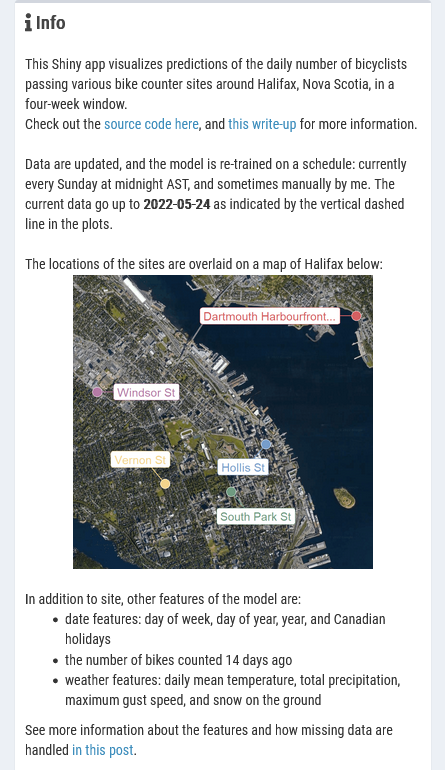
The main interest of this dashboard is the forecasted number of bikes, so it takes the centre column:
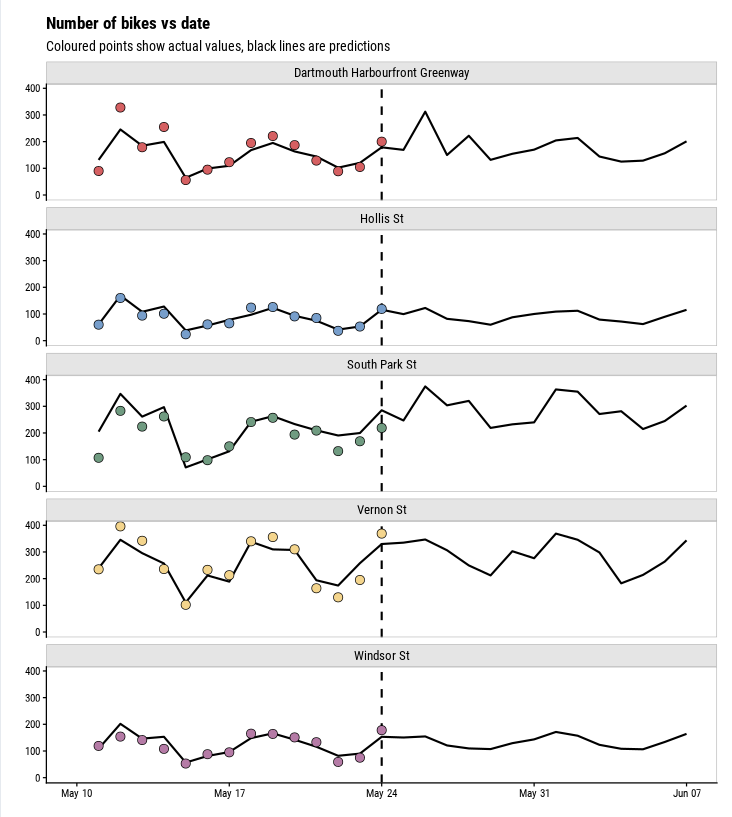
There is a lot of data involved in this proejct, but I decided to keep this app fairly small in scope. Just the last 14 days and the next 14 days (relative to the when data/model were updated) are shown here.
The third column shows the most interesting predictors of the model – the weather variables:

The 14 days to the left of the dashed line are actual values, and the 14 days to right right are imputed future values.2 The table at the bottom lists all of the visualized weather data. To add some interactivity, I decided to make this part editable:

Everything is reactive to this table, so the plots will be updated immediately:
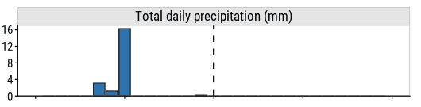
and so will the predictions:
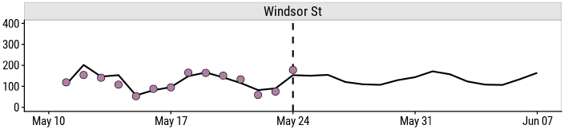
This allows me to ask questions like: how will the predicted number of bicyclists change if it downpours tomorrow?
In this post I used Google Cloud Platform to automate the data ETL pipeline and model training. The model was then deployed in a REST API and Shiny dashboard. When considering the full MLOps cycle, the biggest missing piece is some sort of monitoring functionality. This could include data validation (e.g. trigger an alert if new data have abnormal or missing values) and model drift detection (e.g. model performance is below some threshold which triggers re-tuning). But as far as personal projects go, I’m content to leave it here and re-visit it every once in a while to see how the data and predictions are holding up.
Regardless of the value of the model, this was a great learning experience. I’d not used GCP much before this (we use AWS at my company) but it wasn’t too painful a transition between cloud services. The packages by Mark Edmondson (googleCloudStorageR, googleCloudRunner), and the accompanying documentation, were a great help.
Documenting my process here was important to me. I learn best by doing, and second best by seeing what others do in open source projects like this. I hope that this walkthrough and code can help others in getting their own MLOps projects up-and-running.
setting value
version R version 4.2.1 (2022-06-23 ucrt)
os Windows 10 x64 (build 19044)
system x86_64, mingw32
ui RTerm
language (EN)
collate English_Canada.utf8
ctype English_Canada.utf8
tz America/Curacao
date 2022-08-21
pandoc 2.18 @ C:/Program Files/RStudio/bin/quarto/bin/tools/ (via rmarkdown)Local: main C:/Users/tdunn/Documents/tdunn-quarto
Remote: main @ origin (https://github.com/taylordunn/tdunn-quarto.git)
Head: [767c281] 2022-08-21: Finished converting `predicting-bike-ridership-deploying-the-model`For great introductions to Docker for R users, check out this by Colin Fay and this by Andrew Heiss.↩︎
It would be cool to impute these values with weather forecasts, but I couldn’t find a reliable/free way to get that data.↩︎
@online{dunn2022,
author = {Taylor Dunn},
title = {Predicting Bike Ridership: Deploying the Model},
date = {2022-05-19},
url = {https://tdunn.ca/posts/2022-05-19-predicting-bike-ridership-deploying-the-model/predicting-bike-ridership-deploying-the-model.html},
langid = {en}
}